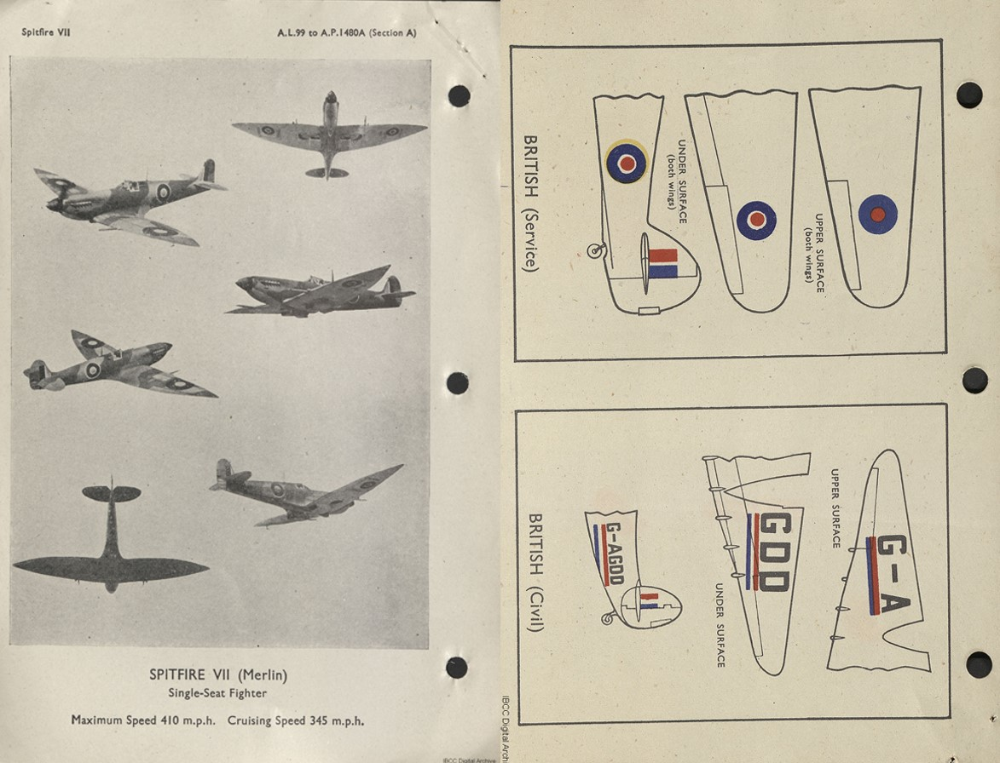
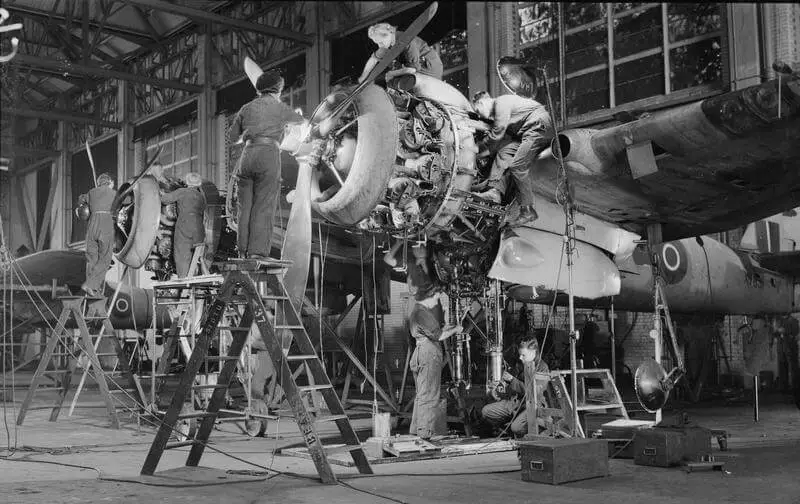
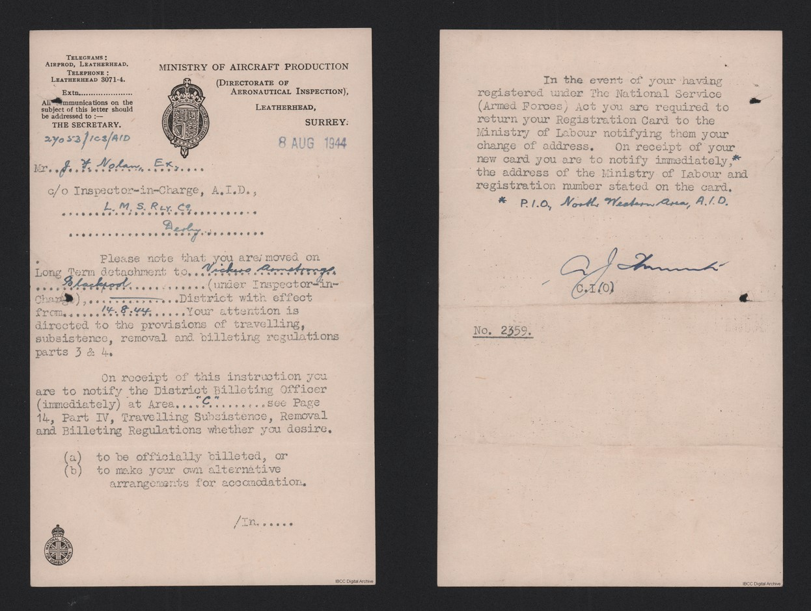
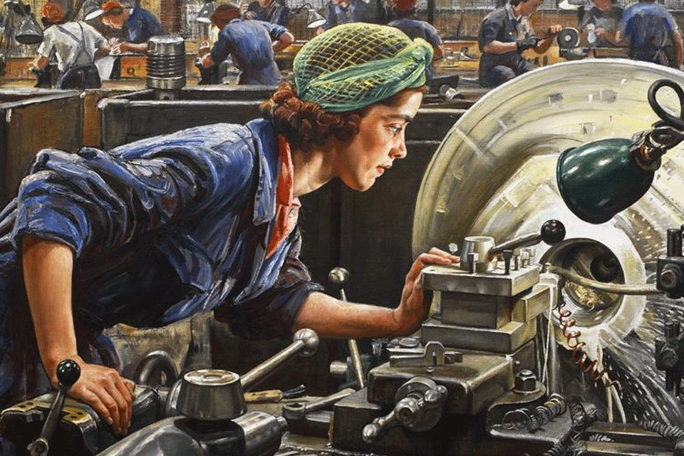
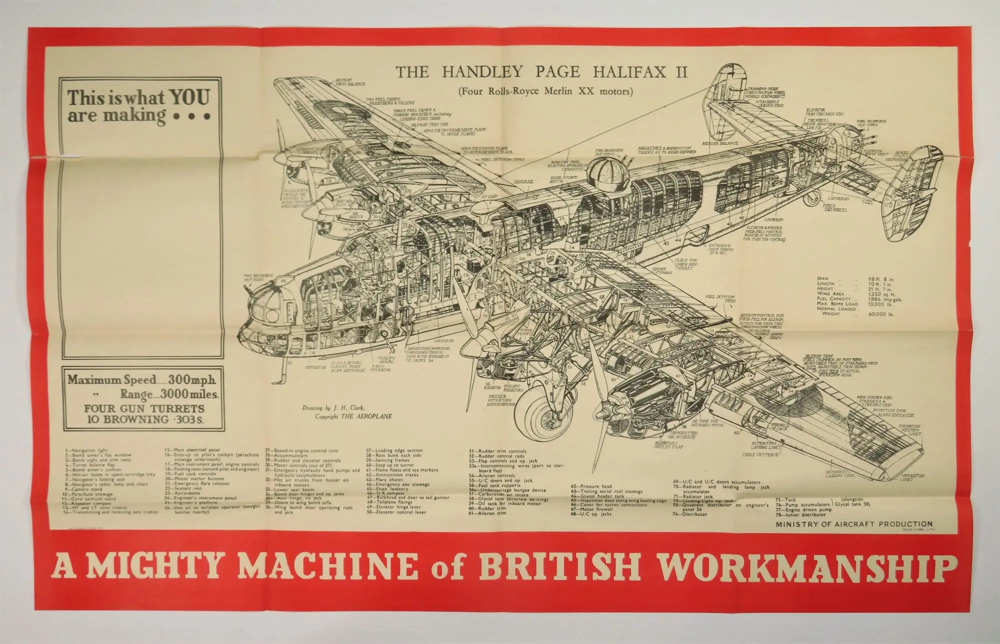
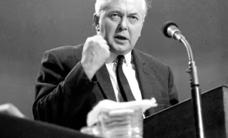
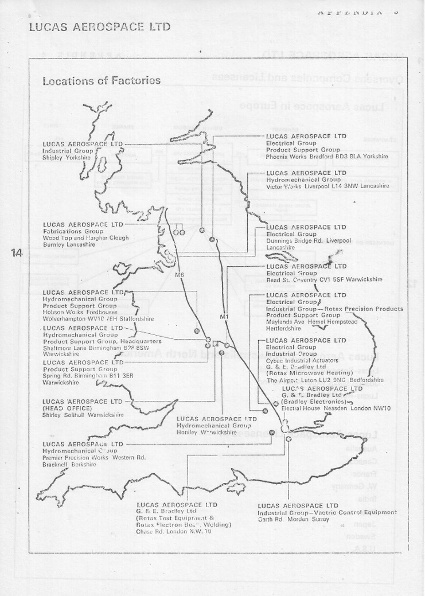
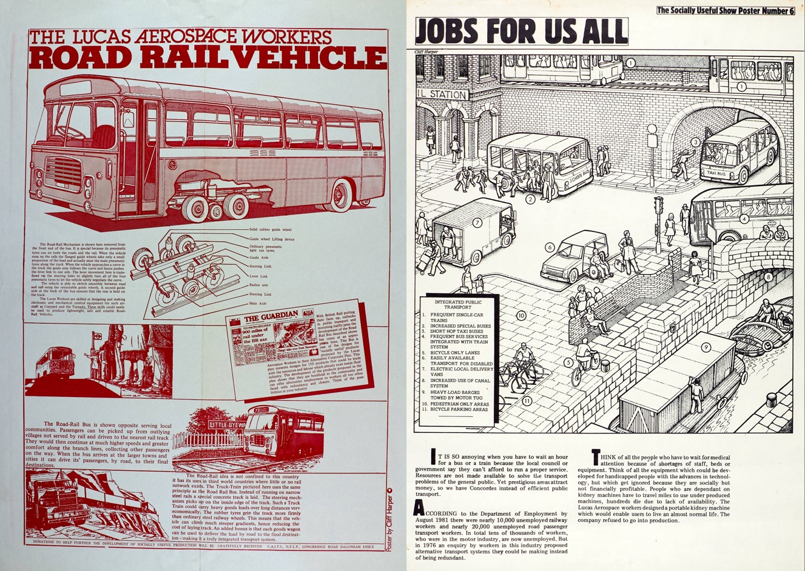
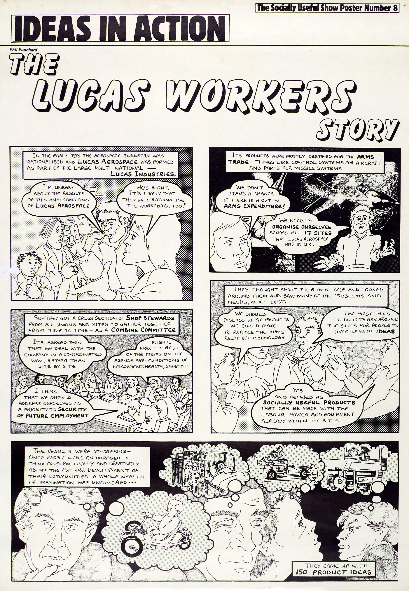

How would we plan technology?
26th December 2025Every now and then, in the face of some late-capitalist design or technology nightmare, I arrive, once again, at the thought that
surely this system is not the best way to design, develop and produce the stuff of society
It’s a cynical truism that capitalism is essential to produce the best technology in the best way, but a truism which only holds if we stubbornly ignore the externalities; the messy hinterland of side-effects and problems. Of ever-present advertising; of unemployment. Of poverty, war and the threat of it; of poor quality and disposability; of addictive and harmful products. Of monocultures and deforestation or habitat destruction; of obsolescence; of data brokering and online tracking. Of the notion that everything is in some way (either known or yet-unknown) imperfect, bad or wrong, or will soon become so, and that you have more or less accepted this state of affairs as necessary or inevitable.
OK, I reply to myself, but - when it really comes down to it, how would we actually direct design and technology if cut loose from the need to maximise profits for shareholders? How would we plan technology?
Now, capitalism is not exactly homogeneous and different sectors experience very different economic contexts. Yet even within, for example, public sector funded engineering projects the metrics of price, cost and return-on-investment are never far from the mind of decision-makers.
I’m going to explore a couple of examples from British aerospace history that offer real-world lessons that challenge the structures and frameworks that today hold a hegemony over design, technology and production.
Planning the UK’s largest industry with no prices
In 1940, soon after the start of World War 2 and faced with the imperative to both innovate and produce military aircraft as rapidly as possible, the British government established MAP - the Ministry of Aircraft Production. MAP’s remit was nothing less than to coordinate the nation’s largest industry and bring about a dramatic expansion in production in as short a time as possible. In doing so, MAP worked with the RAF and Air Ministry to develop and introduce new aircraft designs, established comprehensive and rolling production plans and allocated the requisite materials and labour to each manufacturing firm. Without ever calculating costs.
Beyond UK borders, MAP was the primary liaison with international suppliers in the USA and Canada. In some cases components were supplied specifically for UK use, but in other cases components were used on both sides of the Atlantic - demonstrating a degree of planned allocation of capacity to demand across international borders.
The UK aerospace industry at the time comprised an estimated 10,000 firms and 2 million workers who were brought under MAP’s remit across the UK. Size, professionalism and capability of firms varied dramatically. MAP too, newly formed, developed its own tools, know-how and methods on the fly (if you will) - as such, the period of war led to accelerated development of both planning and production management practices and their dispersal across the industry. It’s therefore notable that this occurred with the industry centrally planned and quasi-nationalised.
Aircraft programme
MAP planning was organised around publishing the ‘aircraft program’, an authoritative document which stated the quantity of each component or plane required from each firm in each week for the next 18-24 months.
 Above: Aircraft Program annex - aircraft identification. source 1, source 2 Click to open full-size.{kind=link}
MAP allocated the required resources to each firm according to their production targets. The two main materials for airplane production, aluminium and magnesium, weren’t in high demand for other war products and therefore resource allocation was less of a constraint for the aerospace industry than for other sectors. Instead, labour and infrastructure allocation were the limiting factors.
Resources were allocated according to the requirements planned in the aircraft programme, not cost, meaning firms didn’t ‘purchase’ or compete for materials or even track expenditure. Indeed even industry planners never assigned costs or prices to materials, components or products – the entire cradle-to-gate manufacturing process occurring within one planned supply-chain.
The aircraft program was in a state of constant redevelopment and to avoid speculation each issue was officially developed in strict secrecy, but in reality informal networks facilitated information exchange between planners and the industry.
To manage this huge industry, MAP came to rely heavily on the use of statistics. Statisticians assessed the industry organisation and production output in unprecedented detail and frequency, allowing planners to, in principle, manage the industry at a national level in an increasingly systemic and previously unattainable manner – for example balancing the cost of employment and unemployment across the country, or assessing areas of inefficiency in the supply-chain.
Statistics were produced by production directorates, who looked after groups of components, and then aggregated by the planning directorate. This group, having a top-level view of the system and with historic supply/demand data, could thus compile an accurate aircraft program across each component and firm.
Co-ordinating with the firms
How did planners engage with firms when proposing major changes to the program? The process was one of bi-lateral negotiation, concluding with a face-to-face meeting and taking in total between a week and a month. Firms were then responsible for communicating with their own subcontractors.
 Above: WAAF flight mechanics and Royal Air Force (RAF) mechanics work together on a Bristol Beaufighter Mark VI plane at the Operational Training Unit, Cranfield, Bedfordshire. source. Click to open full-size.{kind=link}
Speaking of subcontracting, the opinion was gradually formed that too much of it was being done, eroding supply-chain transparency and adding bureaucracy rather than assisting specialisation and efficiency. In illustration of the supplychain's overcomplexity, a subcontracting loop which returned to a parent firm was identified in the supplychain for the Lancaster.
Planners came to understand that firms had their own motivations. Each firm wanted to impress planners, increase their production and capacity and receive investment – motivated perhaps by a mixture of prestige, self importance, desire to contribute to the war effort and post-war profits. This must have made planners into targets for lobbying or even corruption.
Indeed, a paternalistic side to the organsation is suggested when, towards the end of the war, a surplus of propellers was allowed to accumulate in part to avoiding closure of the De Hallivand company’s Stag Lane or Lostock sites which were dependent on such orders.
Lessons in targets and statistics
Many planners and stakeholders had received limited mathematical training and their ability to correctly interpret statistics and charts was therefore limited. As a result, despite the efforts to develop and use statistics as the evidence base for planning, much of the decision-making was still conducted through spirited and almost virtuoso debate, sometimes with reference to statistics, other times falling back on logic or experience.
This statistical illiteracy must have been a significant barrier. One example involves an official who, after requesting a chart be copied onto a larger piece of paper (and, as a result, the axis scales were changed) was insistent that the data had been distorted during the enlargement, resulting in a different gradient line, and thus refused to use the chart and requested a photographic enlargement.
Those who worked with and understood statistics, then, occupied a privileged position in the ministry. Yet, while the drive to collect more detailed and varied data clearly helped planners solve relatively simple problems like assessing the accuracy of a single firm’s estimates, it was not sufficient to answer complex and interrelated questions like where in the supplychain should changes be made to maximise efficiency. A planner at the time writes that “although adequate statistics were necessary, it was the limitation in the number of interrelated variables that could be comprehended by one brain that was the effective limiting factor". It is worth explicitly pointing out that planners did not have access to computers to support their calculations.
Labour allocation (or, the “Manpower budget”)
The government allocated labour to each ministry in the "manpower budget", dividing labour between the Ministry of Aircraft Production, Ministry of Supply, Board of Trade, Home Office, Ministry of Works, etc. This provided the cabinet with a crude but direct method of control over labour, for example making it possible to manage deficits by deciding where to prioritise allocation. To maintain records of labour use, every company was required to declare their employees and the approximate share allocated to each ministry.
 Above: You got the job... source Click to open full-size.{kind=link}
‘Manpower’, amazingly, treated all workers as a single unit, choosing not to differentiate between workers with different training, skills or experience. This meant that while workers were transferrable units on paper, in practice each ministry and firm were reluctant to have labour reassigned.
The ‘manpower budget’ is also something of a misnomer given the millions of women who worked during the war. By 1943, 90% of single and 80% of married women ref worked in industry, agriculture or in the armed forces. The aerospace industry was no different and at Rolls Royce in Hillington outside Glasgow around 2/3 of the factory’s 24,000 employees were women. In a pioneering strike, women workers won equal pay with male colleagues – they had been paid less than 60% the male wage.
 Above: Ruby Loftus, ‘an outstanding factory worker’, screwing a Breech-ring at the Royal Ordinance Factory in Newport. Source. Click to open full-size.{kind=link}
MAP struggled to devise a generic method to determine labour requirements from production targets and developed a complex equation which included the mass of the airframe and the lifecycle stage. The calculations were made even more challenging when production requirements changed, which of course happened constantly. With MAP unable to define a lead time for any product, planners opted to build-up excess labour during changeover periods. I wasn’t able to find out how firms hired workers out of the ministry’s budget.
Research, Development and introducing new products
The war impetus led to an ongoing need not only to produce aircraft in large quantities, but to develop and introduce improved designs and technologies as frequently as possible. This led to constant R&D and production change – the Spitfire, for example, reached 24 "marks" in its lifetime, and it was common for up to 5 marks of a given component to be in production simultaneously ref.
R&D was led by the Air Ministry, with apparently informal liaison with MAP. Due to the incredible cadence of design revisions, prototyping and testing were effectively integrated into the production cycle; major technical decisions such as which propellor or engine to use for a new plane were sometimes made after first introduction.
 Above: "A mighty machine of British workmanship" source Click to open full-size.{kind=link}
I haven’t found much information about how intellectual property was treated across military and industrial stakeholders during and after the war. I assume that IP developed by military agencies was retained as state secrets rather than patents, or indeed as ‘secret patents’ (see this essay which explains how thousands of ‘secret patents’ were filed by the USA shortly after WW2 pertaining to the Manhatten Project, and how shortly after legislation was passed which instead prohibited patents to be filed regarding nuclear weapons). Nevertheless, Supermarine, the developer of the Spitfire, filed for patents during the war, demonstrating that the post-war commercial incentive was still a motivation for companies conducting R&D during the war.
When planning the introduction of a new plane or mark MAP was faced with a dilemma. Performance and thus demand for a new plane could not be decisively established until after introduction and testing, meaning that production plans had to be revised in response to customer feedback, just like the designs they pertained to.
Introduction of new marks was a highly challenging endeavour because it was unacceptable for production to completely cease while production was changed over; MAP thus had to juggle change-over and production of two marks of a plane while maintaining production output.
R&D thus doesn't appear to have been coordinated very well, with inputs coming from the Air Ministry, MAP and firms seemingly without a formal steering framework. How capacity was set aside for R&D activities is also very unclear, although accounting tricks played a part, like intentionally exaggerating production allocation to a firm to provide them with excess materials to support R&D activities.
Information accuracy and supply chain transparency
Of all its responsibilities, MAP seems to have struggled constantly to balance supply and demand for spare components, something which could become a political embarrassment if stocks were too large or small.
Some of the problems they had to contend with are specific to the context. For example, planes of different types or serving in different territories would have different spare component demands; for example, a damaged defence fighter might land and either require repairs or have components stripped from it, while a bomber would likely be lost entirely over enemy territory. Demand for spares would also tail off as a model of plane reached the end of its life.
The system was plagued with (now) amusing problems. In one accounting mishap, a memo titled “gone with the wind” reported several hundred Hercules engines missing. The Air Ministry would also deduct stocks once packaged but not sent and wouldn’t account stocks for received components until unpacked – leading to apparently significant loss and reappearance of stocks. Similarly, some firms reported planes complete before they had been air tested, which "avoided" the uncertain wait for clear weather in which to run the tests.
But the most serious challenge was that customers and assembly manufacturers did not always accurately report their demands or stocks. Planners at the time were aware that "statistics about the future are likely to be very unreliable, where the providers have … [no] incentive to be unbiased in their judgment".
Why were providers’ estimates biased? I think this enquiry proves relevant when considering the planning of industry without a profit motive.
Consider the production manager at a factory that can’t meet its production targets because of a shortage in oil coolers – or consider their counterpart at an RAF airbase with part of their fleet grounded for lack of the same oil coolers. Now, clearly oil coolers are in shortage - for whatever reason – and planners will try to assess the severity of the deficit, where supplies are most important to be allocated and how much capacity and resource should be diverted from the production of other components and products to accelerate production of oil coolers.
The production manager at both the factory and airbase are incentivised to inflate their demands. Even if they see the perils of doing so, reporting honestly would lead to an even lower allocation of oil coolers if other production managers inflate their demands.
At this point, planners, shocked to see such a huge deficit opening up, would urgently ramp-up production of oil coolers by, for example, reducing production of radiators. Soon, as the deficit starts to close, each stakeholder revises their orders – they don’t need as many oil coolers as they previously reported. MAP is now left with a surplus of oil coolers, manufactured less efficiently than normal - and the industry starts to report a shortage of radiators.
Interlude
Though remaining aware of the horrible context of total war within which MAP was established and operated, it’s possible to observe that centralised direction of the industry was able to modernise and coordinate the industry through a huge expansion of production and technical development.
With the successes and failings of the MAP in mind, let’s look at a contrasting planning initiative which developed some thirty years after the closure of MAP at the end of the war, this time not from a ministerial body but instead at a grassroots level among workers at Lucas Aerospace.
Lucas Aerospace
Lucas Industries traces its formation to 1875; a product of Birmingham’s late 19th century technological ferment. The city was a hotbed for new industrial enterprise owing to lower class barriers than London, good technical educational institutions, dense industry and access to finance.
As the UK rapidly deindustralised in the 1960s, Lucas would become internationally known for what some called a new type of trade unionism, one which sought to fight deindustrialisation not only with strikes but by planning and proposing alternatives.
A sprawling aerospace monopoly meets industrial “reorganisation”
By the mid 20th century Lucas had a near monopoly position in the automotive parts market and sought to repeat the same growth strategy in the aerospace sector but at a much more aggressive pace.
This centralising approach was practically government policy at the time. The 1964-9 Labour government under Harold Wilson heavily encouraged and subsidised private corporations such as British Leyland and GEC to monopolise. Science and industry was a focal point for the government, Wilson having pledged to use the “white heat of the technological revolution” to reshape British society, stating that “we must harness Socialism to science and science to Socialism”. The body created to enact this was the Industrial Reorganisation Corporation ref.
 Above: Harold Wilson's 'White heat of technology speech, 1963. source Click to open full-size.{kind=link}
What did this mean for industry? Put simply, massive centralisation and rationalisation, a process which they felt would reduce overheads, increase industry efficiency and thus keep British manufacturers competitive with European firms. Even before Wilson, Lucas had been reported to the Monopolies Commission, found indeed to hold a monopoly in automotive parts but offered the concession that this was in the public interest.
This was therefore a period of centralisation for the aerospace components industry and Lucas was the government-endorsed custodian of the sector. Entering 1967, Lucas owned two aerospace companies across five sites. By 1970 it owned eight across eleven sites.
 Above: Lucas Aerospace Ltd, Location of Factories, 1975. Source: The Lucas Plan Click to open full-size.{kind=link}
Following this phase of acquisition, Lucas management and the IRC agreed on the task ahead – removing duplication, centralising R&D, investing in advanced equipment while reducing overheads through massive redundancies – all with the familiar objective of reducing costs and increasing profits. In 1971, Lucas Aerospace management put forward plans to shareholders to centralise work in 4 (expanded) sites employing 8,000 workers, down from 18,000.
This centralisation and government-endorsed industrial reorganisation and redundancy changed the balance of power between workers and management. The established trade-union bargaining arrangements with local managers were suddenly replaced with a centralised management who were able to play sites off against one another. Union representatives (reps) were used to bargaining over pay – not the closure of whole sites. Some 19% of the workforce were laid off in 1971.
Formation of a combine committee
Union activists were desperately seeking new tactics - having observed Lucas’s new strategy of acquisitions and mass-layoffs, they believed union structures needed to mirror Lucas’s nationwide organisation with a "combine committee", which would liaise with unions representing each group of workers and Lucas factory site. They proceeded to build such an organisation despite the opposition of CSEU (Confederation of Shipbuilders and Engineering Unions), AUEW (Amalgamated Union of Engineering Workers) and TASS (Technical, Administrative and Supervisory Section) officials who saw a combine committee as a threat to their own negotiating position with Lucas management.
Such a committee would host union representatives, elected from members at each site and section of the Lucas Aerospace workforce, thereby allowing bilateral exchange of information and strategy. The combine could collate information about conditions and developments at each site, monitor management’s strategies and try to get ahead of redundancies or closures.
Building such an organisation is quite an undertaking. Unions would differ between sites as well as between groups of workers. Each site had very different histories, levels of union organisation and cultures – perhaps most of all, work and facilities varied dramatically between sites and thus workers had differing interests.
Establishing a robust democratic framework was essential to ensure workers at all sites felt represented. The combine, recognising this, established a constitution which explicitly aimed to unite workers across the conglomerate with a “one site - one vote” policy, and positioned itself as a coordinating body which supported but did not undermine the autonomy of elected union reps at any given site.
Nationally coordinated strike action
Before exercising greater ambitions, the combine won broad support by showing its commitment and value in a strike at Burnley in 1972. After comparing pay information obtained from across Lucas the combine learned that workers at Burnley were significantly underpaid compared to other sites. In the resulting 13-week dispute the combine organised a cross-site strike fund, visits by reps from across the company to support the strikers and the distribution of information about the dispute to workers across the Lucas group.
Building on this, the combine was able to effectively counter a later proposal to cut 800 jobs spread across all sectors and sites. The Combine was able to organise precise cross-site tactics to maximise disruption while minimising the number of workers needing to take strike action and thus lose their income. The tactic built a feeling of unity and mutual understanding among workers across the organisation. Clerical workers, telephonists, dispatch, transport and other groups were organised to carry out rolling strikes, while a strike fund was coordinated from workers across the group to cover their lost wages.
An alternative plan
These successes were encouraging but defensive; clearly not a long-term strategy to halt redundancy. Many reps felt a genuine enthusiasm for the incoming 1974 Labour government and its promise to create “an irreversible shift of power towards working people”.
Above: Meeting Tony Benn - posing with a copy of 'Meaningfull Production' . source Click to open full-size.{kind=link}
Lucas, for its part, continued to create an irreversible shift of workers towards unemployment. So wrote the Investor’s Chronicle in 1974: "Lucas remains determined to concentrate all its major capital investment projects overseas and leave Britain more or less on a care and maintenance basis."
Thus, under threat of further layoffs and emboldened by government rhetoric, the combine decided they needed a bolder strategy. Meeting the Minister for Industry, Tony Benn, in 1974, they reached the idea of creating an ‘alternative plan’ which would be developed through consultation with members across the Lucas Aerospace conglomerate. The plan would build unity across sites, bringing workers together with a common goal which could be negotiated for with management – rather than simply demanding no layoffs with no alternative plan.
The resulting plan reflected the concerns, experiences, ambitions and interests of the technical workers who contributed to it. A theme emerged that workers wanted to design and produce equipment which was “socially useful” rather than for military use. Their plan would therefore guarantee their own livelihoods and the future of their factories but also allow them to play a constructive role in improving society. The demand for demilitarisation may have been partly informed by the horror and doom of the Vietnam and cold wars respectively, alongside general moral sentiment.
 Above: Front cover of the Lucas alternative plan. source Click to open full-size.
Above: Front cover of the Lucas alternative plan. source Click to open full-size.
In the published plan, the combine demonstrate an explicit dissatisfaction not simply with redundancies but with the market based economy as a whole and its inability to meet the needs of society. The plan states, for example, “there is something seriously wrong about a society which can produce a level of technology to design and build concord but cannot provide adequate urban heating systems to protect the old age pensioners who are dying each winter of hypothermia.”. They understood the political implications of their writing: “progress can only be minimal so long as our society is based on the assumption that profits come first and people come last. Thus the question is a political one.”.
The plan offers an engineering solution to link and solve the problems of job losses and societal issues. They propose 150 ideas developed to different levels of detail but with the most promising suggestions provided with detailed technical and economic analysis and a degree of market research. The plan also proposed a scheme for worker re-training, apprenticeships and equal employment opportunities for women, who comprised 40% of the lowest paid workforce but only 2% of technical roles.
The tactics for the introduction of the plan were less defined. The combine was concerned that Lucas might not engage at all or might take the profitable ideas (and the pro-bono design work that had gone into them) and ignore the rest. That might result in partial implementation but still redundancies, something which the combine might take the blame for.
Ideas for socially-useful engineering and production
Ideas included in the plan spanned a wide breadth of sectors, drawing from the technical knowledge of engineers across Lucas Aerospace. They include ideas for medical equipment to be designed in conjunction with the Ministry of Health: artificial limbs, sight aids, mobility aids and a life support unit for ambulances.
 Above: Left: the proposed road-rail vehicle which attracted so much attention, and right: a poster showing how Lucas de-armament through the alternative plan would contribute to a better future Source. Click to open full-size.{kind=link}
Alternative energy sources and storage technologies are heavily featured; solar cells, “windwills” which could benefit from Lucas’s speed regulation and aerodynamics expertise, heat pumps that drew from heat exchanger knowledge and hydrogen fuel cells.
Some proposals were outright prescient. Proposing a hybrid powertrain car, the plan comments "such a system would greatly reduce atmospheric pollution and noise pollution would be reduced likewise". Whether stated benefits of a proposed road-rail vehicle (which received great interest from a number of Labour councils) were practical, I don’t know. The vision nevertheless speaks of the workers’ determination to do good with their work.
To read the plan today is to browse an optimistic and technological retro futurist vision, yet one which is thoroughly grounded in serious engineering analysis and concern for the problems of the time.
Outcomes
Though not the first or only "alternative plan" developed in the period, it was the most well-developed and has the most impactful legacy; and it’s therefore worthwhile to consider why the plan originated at Lucas.
Lucas’s demand for short production runs rather than mass production meant stronger relations between engineers and production workers; resulting in a level of mutual respect and social cohesion that isn’t found in all engineering contexts.
This specialised and small-batch production also resulted in relatively flexible factory layouts and a highly-skilled workforce who were confident in their abilities to solve complex problems at the cutting edge of technology. The boom-and-bust in aerospace had led Lucas to fill gaps in demand with alternative production before. Due to the scale of Lucas Aerospace, workers had a wide breadth of technical expertise and could thus apply their knowledge to alternative plans with relative ease.
 Above:Socially Useful poster 8 - a summary of the plan. source Click to open full-size.{kind=link}
The plan drew widespread interest from across the UK and internationally, as disarmament campaigners, trade unions, aerospace workers and many other groups saw in the initiative the promise of an optimistic future planned for social needs rather than profit and war. Thus, while hardly tested, the plan at least served the purpose of stoking inspiration and further initiatives across the UK and world.
It’s difficult to say to what extent the plan was successful in resisting layoffs and building worker unity. Layoffs and closures continued and by 1979 with the arrival of the Thatcher Conservative government, Lucas workers no longer had even the principle of support in Government. Lucas management largely ignored the plan itself, instead adopting an aggressive approach of intimidation and victimisation of leading combine committee activists – culminating in firings and transfers of key individuals (such as Mike Cooley and Ernie Scarbrow) which succeeded in undermining the combine’s resilience and effectiveness.
Two halves of a disunited whole?
MAP and the Lucas Plan never coexisted (until this article anyway) but almost represent the two halves of a disunited whole; the industry-wide allocation of resources and labour and the engineer and worker-led democratic co-design of technical plans and initiatives.
The Lucas plan provides an inspiring demonstration of workers’ optimism and creative ability, even a glimpse into a just-out of reach society where technologies are developed and used based more on their relative merits and alongside democratic planning rather than being heavily influenced by market factors and profitmaking. The Lucas combine committee offers an imperfect prototype of an organisation which could democratically co-develop plans for industrial production in the interest of social needs rather than profit.
As the authors of The Lucas Plan put it, “workers' plans make explicit workers' needs and priorities; and increasingly this has come to mean workers not just as producers but also as members of a local community, as fathers and mothers, as future pensioners, as patients and as users. "Workers' plans" involve attempting as far as possible to show the connections between these needs, and how they could be met with the productive and financial resources now under the control of management, the financiers or the civil service. And finally, workers' plans point ahead to the improvements and extensions of workers' organizations which are necessary to fight for control over these resources.”
Indeed, the initiative emphasises just how much more support Lucas workers needed from the labour movement and (labour) government to place any meaningful pressure on the Lucas management. They were organised against by labour organisations including the TUC, the CSEU and the AEUW – each of whom saw threats in the self-organised form the combine committee took, and the more radical activism it was prepared to pursue.
In sharp contrast the MAP, some 30 years earlier, was in no way a democratic institution and its plans were state secrets, yet it's interesting that MAP explicitly considered things which are externalities for private organisations today, such as unemployment. For example, MAP and other ministries distributed jobs across the United Kingdom not only to reduce reliance on industrial hubs, but to control unemployment, which would pose a social cost. It’s possible to consider opportunities to address other externalities such as environmental impacts or job satisfaction in a systematic way.
MAP’s structure allowed it to maintain oversight across the industry while also facilitating interaction with individual firms as if they were internal stakeholders – much like a multi-national company might structure its supply-chain today. The organisation understood its industry as a system which could be understood using statistics, allowing for simple but informed cause-effect decision-making despite the internal complexities of the industry.
Yet, unlike a modern multi-national company, MAP aimed to optimise production and R&D efficiency rather than to maximise profits or grow market share, as sought by Lucas. A subtle difference perhaps, but one which held outright determination of the product out of capitalism’s reach. With some tongue-in-cheek, I’ll point out that there were no adverts on the spitfire and no pay-to-unlock features in the cockpit of the Lancaster.
Indeed, to achieve this optimisation of production, MAP planners opted to abandon cost metrics altogether and instead directly measure and allocate resources and labour. Planners at the ministry saw their task with a directness we perhaps lose when speaking in terms of the intermediary that is monetary cost: "All problems of planning are problems in the choice between alternatives, that a decision to produce more of one type of product [is] at the same time a decision to produce less of something else."
Limitations to both examples abound. MAP existed for the period of wartime only, forcing firms to cooperate while anticipating a return to capitalism after the war. The Lucas plan was never implemented and consisted not of developed programs suitable for implementation but of ideas, as well as eschewing the boring-yet-necessary. Neither example deals with products for consumer use.
Limits borne in mind, let these endeavours nevertheless encourage us to think more critically and ambitiously – of the default primacy of profit-making in directing technology and product design, and of how we conceptualise and structure the systems of research, design and production.
I've been reading:
Planning in Practice: Essays in Aircraft Planning in war-time, Ely Devons (1950)
the Lucas Plan - A New Trade Unionism in the Making?, Hilary Wainwright and Dave Elliott (1979)
People's Republic of Walmart, Leigh Phillips and Michael Rozworski (2019)